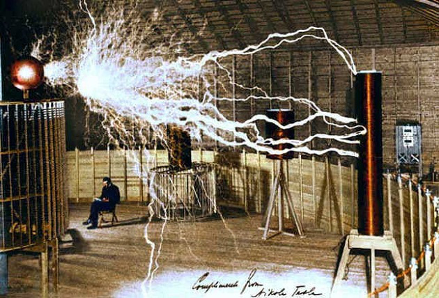

მიიჩნევენ, რომ ატმოსფერულ ელექტროობაზე ჩატარებული მისი ექსპერიმენტები იყო ტუნგუსკის კატასტროფის გამომწვევი მიზეზი. ამაში იმ პერიოდის ჟურნალისტებიც ადანაშაულებდნენ მეცნიერს. თუმცა არსებობს საწინააღმდეგო შეხედულებაც, რომ ტესლას იმ პერიოდში არ ჰქონდა ისეთი სისტემა, რომელიც მსგავს მძლავრ აფეთქებას გამოიწვევდა. ამ დროს მას შეწყვეტილი ჰქონდა დაფინანსება მორგანისგან, რადგან მან ტესლას გეგმებზე შეიტყო. 1903 წელს ვარდენკლიფიდან აპარატურა გაიტანეს და გაყიდეს, რომ ვალი დაეფარათ. მაგრამ ცნობილია სხვა რამეც – ტესლა არ ნებდებოდა.
1907 წლიდან ხანგრძლივი პაუზის შემდეგ ნიკოლა ტესლა ხელახლა მიუბრუნდა ექსპერიმენტებს. თავისი საკუთარი რესურსებით ტესლა მოწყობილობების დამონტაჟებას აგრძელებდა. „სადგურის მშენებლობა უნდა დავასრულო. უნდა გადავდგა ის ნაბიჯი, რომელიც კაცობრიობის მთელ ცხოვრებას სასიკეთოდ შეცვლის.” არსებობს დოკუმენტები, რომელთა მიხედვითაც, 1907 წელს მეცნიერმა კომპანია „ვესტინგჰაუსისგან” ისევ მიიღო დიდი რაოდენობით აღჭურვილობა, რომელიც 1912 წლამდე იყო მის მფლობელობაში.
1908 წელს ტესლას ჰკითხეს, როდის დაასრულა ექსპერიმენტები ლონგ-აილენდზე, რაზეც მან განაცხადა, რომ ისინი არც შეწყვეტილა, რომ მისი ლაბორატორია ისევ იქაა „და ექსპერიმენტებს ძველებურად ვახორციელებ”. ფაქტები მიანიშნებენ, რომ 1908 წელს ტესლაცა და მისი კოშკიც სრული დატვირთვით მუშაობდნენ. უფრო მეტიც, შემორჩენილია სასამართლოს ჩანაწერები, სადაც აღწერილია, რომ ტესლამ, როგორც ბრალმდებელმა, ფიცის ქვეშ განაცხადა, რომ 1915 წელსაც კი, ტუნგუსკის მოვლენიდან 7 წლის შემდეგ, ვარდენკლიფი სრულ წესრიგში იყო და არაჩვეულებრივად ფუნქციონირებდა. ასე რომ როცა ტუნგუსკაში კატასტროფა მოხდა, ვარდენკლიფი ტექნიკურად გამართული გახლდათ. მაგრამ ჰქონდა თუ არა მას საკმარისი სიმძლავრე?
უფრო სავარაუდოა, რომ კი. გადამცემის თავზე მდებარე კონდენსატორს ჰქონდა საშუალება, 10 000 ამპერი ძალის ელექტროდენი შეექმნა, რომლის ძაბვაც მალე აღწევდა 100 მილიონ ვოლტს, სიმძლავრე კი – 1 ტერავატს (ტერავატი = 1 ტრილიონი ვატი). 1 ტერავატი – ეს იყო იმ რაოდენობის ენერგია, რომელსაც ტესლა 1 საუკუნის წინ უპრობლემოდ იღებდა და გამეორება ვერავინ შეძლო. დღემდე მაქსიმალური რაოდენობა ელექტროენერგიისა, რომლის გადაცემაც შეიძლება, არის 1 მილიონი კილოვატი, რაც ათასჯერ ნაკლებია. შეეძლო თუ არა ტესლას, გადაეცა ამ რაოდენობის ენერგია ტუნგუსკის რეგიონში?
ეს ვერსია ერთი შეხედვით სასაცილოც კი ჩანს, მაგრამ უფრო ღრმად გამოკვლევისას და დეტალების შესწავლისას თეორია არც ისე შეუძლებელია. ტუნგუსკის კატასტროფამდე ორი თვით ადრე, 1908 წლის მაისში, ევროპისა და რუსეთის თავზე სინათლის დიდი ნაკადები ჩნდებოდა, 9 დღით ადრე კი – უჩვეულო ფერის ხაზები. ღამეები ისე ნათდებოდა, როგორც პოლარული დღის პერიოდში. მოვლენამდე 3 დღით ადრე ნათება უჩვეულოდ გაიზარდა. რამდენიმე თვის წინ კი მოწითალო მანათობელი ბურთები ჩნდებოდა რუსეთის ცაზე ურალიდან ბალტიის ზღვამდე. რა იყო ეს? ვარდენკლიფის მოწყობილობების გამოცდა?